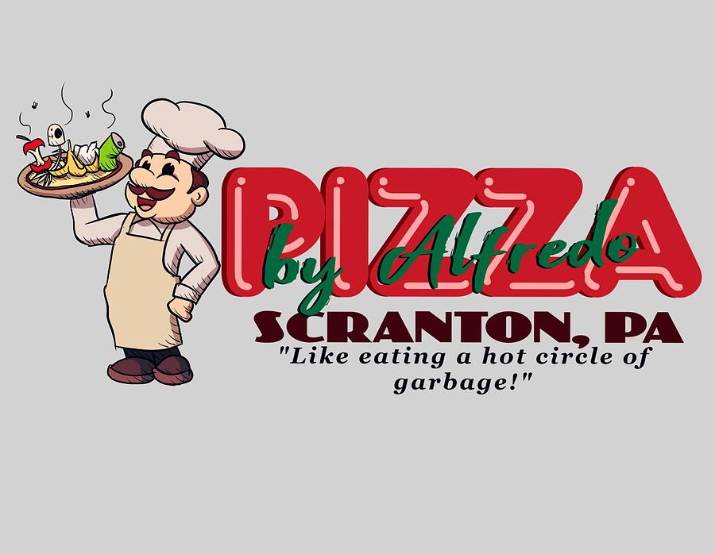
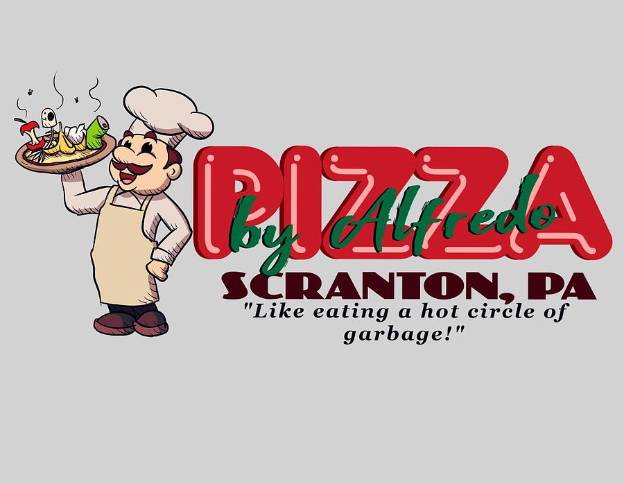
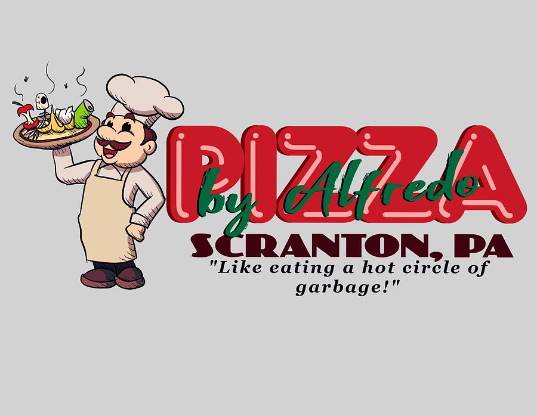
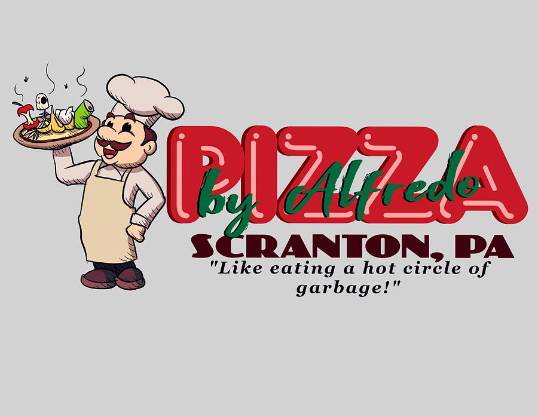

 
  Scranton is known for many things, it's coal, Dunder Miflin, ... and that's about it. But snuck in that large list is one of the worst pizza places on earth, "Pizza by Alfredo" (not to be confused with Alfredo's Pizza Cafe, a commone mistake). The upside to getting pizza from Pizza by Alfredo is that they don't press charges when one kidnaps one of their delivery drivers. The downside is that they offer crappy and confusing coupons to swindle your money. So if you're looking to avoid the hassle of purchasing their pizza but still want the horrible taste, try out this recipe I came up with. This is Michael Scott tapping out.
Ingredients:
Directions: